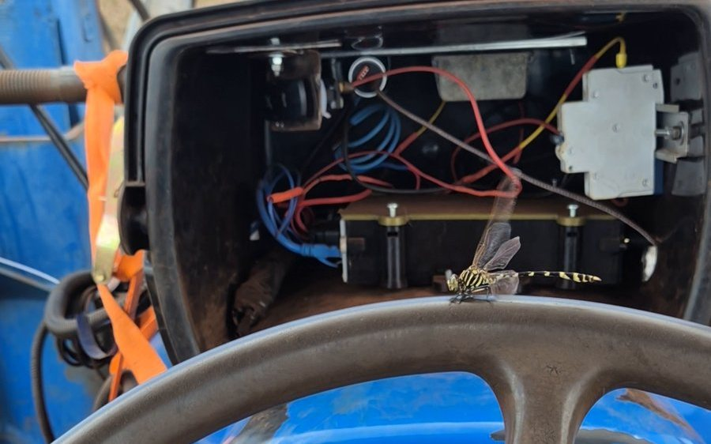
O piloto automático que eu montei no meu trator: a lista de peças
“Montei o piloto do meu trator com peça comprada na internet. Aqui está tudo o que eu usei, com o preço de hoje”
O que eu uso, o que ainda tá em teste, onde comprar e quanto tá hoje
- Piloto de marca, nas lojas, sai de R$ 33 mil a R$ 50 mil, fora a instalação
- O meu, só de peça, pra quem já tem tablet e internet: uns R$ 6.700 dividindo as placas com mais gente. Montando um só, passa de R$ 9 mil
- Pelo caminho mais barato, uns R$ 4.700 dividindo, ou perto de R$ 6.300 montando um só
- Roda no AgOpenGPS, que é de graça
A montagem, os programas e a calibração vão no guia completo, que eu tô terminando (última página)
Links e preços conferidos em 17/11/2026. Preço muda todo dia: confira no anúncio antes de pagar.
Baixar a lista em PDFO que eu usei no trator
Preços de 14 a 20/11/2026
Onde tá "paguei", é o que eu paguei em 2025. O resto é o preço de hoje. No AliExpress, o frete tá do lado do preço; no Mercado Livre, depende do seu CEP
O que eu uso
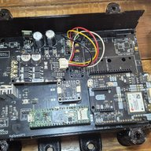
Placa principal AiO v4.5 Standard
para que serve junta tudo: GPS, motor e sensores
situação o que eu uso. Mandei fabricar na JLCPCB: o mínimo é 5 placas, e eu paguei R$ 2.257,69 o lote. Dá para dividir o lote com mais gente, ou pedir 2 montadas e 3 sem peça. Mande fazer na JLCPCB
R$ 451,54 a placa, paguei
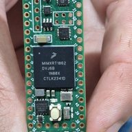
Teensy 4.1 com Ethernet
para que serve o cérebro: roda o programa da direção
situação a mesma placa que eu uso, outro vendedor. A minha veio dos Estados Unidos: paguei R$ 418,10. No anúncio, escolha a opção "Teensy 4.1 DEV-16771": vem sem os pinos, precisa soldar. A "DEV-16996" já vem com os pinos, por R$ 317,85 + R$ 60,88. Quando chegar, confira o chip de rede ao lado das 6 ilhas: sem ele, é a versão sem Ethernet
R$ 298,99 + R$ 61,25 de imposto (20/11). Frete R$ 61,77
Conector de rede da Teensy, fêmea, torneada, passo 2 mm (variante "(P)")
para que serve liga a rede da Teensy
situação o que eu uso
R$ 17,79 + R$ 3,66 de imposto (20/11). Frete R$ 33,58
Barra fêmea 2,54 mm (as fileiras da Teensy), 5 peças
para que serve encaixa a Teensy na placa
situação o que eu uso
R$ 21,04
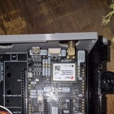
GPS do trator F9P (simpleRTK2B, o kit com antena)
para que serve dá a posição com precisão de centímetros
situação o que eu uso (ArduSimple, Espanha). Foi o que eu comprei e usei; hoje tem outros mais baratos (veja as trocas). A antena do kit serve; eu usei a STA Orange, igual à de baixo
R$ 2.916,43 o kit, paguei
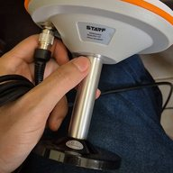
Antena GNSS L1/L2/L5 tipo AG35 (STA-35H), com cabo de 5 m
para que serve fica no teto do trator
situação o que eu uso. A minha é a STA Orange; essa é igual. No anúncio, escolha a opção "STA-35H SMA-5M": é a que vem com o cabo
R$ 259,63 + R$ 53,24 de imposto, com o cabo (20/11). Frete R$ 82,77
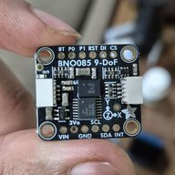
Sensor de inclinação BNO085 da Adafruit (4754)
para que serve corrige quando o trator inclina
situação o que eu uso. A minha é a da Adafruit, comprei nos Estados Unidos. O link é de uma no mesmo desenho da Adafruit (código 4754), vendida no AliExpress, que eu não testei no trator. Não compre a placa roxa "BNO08X": pode vir com o chip BNO080 e os pinos são em outra ordem
R$ 715,86, paguei. Essa: R$ 186,99 + R$ 38,31 de imposto (20/11). Frete grátis
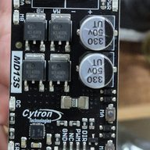
Driver MD13S, a cópia
para que serve a placa manda, ele entrega a força ao motor
situação o que eu uso, funciona. O link é do original da Cytron, que faz o mesmo
R$ 197,75, paguei
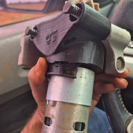
Motor 42GM-895 24 V
para que serve gira o volante
situação o que eu uso. No plantio rodou o de 200 rpm; o de 140 rpm, que é o que eu indico, está em teste. No anúncio, escolha "140RPM": ele abre marcado em 2700
R$ 379,55
Conversor 12 → 24 V 10 A
para que serve o trator é 12 V e o motor é 24 V
situação o que eu uso
R$ 88,41 + R$ 18,13 de imposto (20/11). Frete grátis
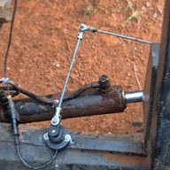
Sensor de ângulo da roda, kit ABCCAR (4 sensores, 180°, chicote)
para que serve diz para que lado a roda está virada
situação o que eu uso, funciona. O kit vem com 4; eu usei só um
R$ 949,00 o kit, um só sai R$ 237,25
Caixa Rohdina 300 × 200 × 150, IP68, tampa transparente, com placa de montagem
para que serve protege a placa na cabine
situação o que eu uso
R$ 292,94
Placa de montagem Rohdina 300 × 200 (reposição)
para que serve o fundo onde se monta tudo
situação o que eu uso
R$ 53,12
Torres de elevação Rohdbox, 4 peças
para que serve o segundo andar dentro da caixa
situação o que eu uso
R$ 23,46
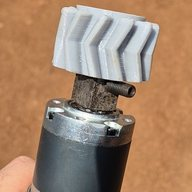
Filamento PETG Creality Hyper 1 kg
para que serve imprime a engrenagem e o suporte do motor
situação o que eu uso
R$ 109,00
Filamento CF-PETG (fibra de carbono)
para que serve peças mais firmes
situação o que eu uso
R$ 172,22
Verniz isolante Isotec 300 ml
para que serve protege a placa da umidade
situação o que eu uso
R$ 59,99
Sílica gel 10 g, 10 sachês
para que serve seca o ar dentro da caixa
situação o que eu uso
R$ 29,97
Dá pra trocar por
Conector de rede da Teensy, macho, torneado, passo 2 mm
no lugar de o macho do conector que eu uso
o que muda faz o mesmo
situação equivalente ao meu
R$ 21,76
Barra macho 2,54 mm 1×40, 10 peças
no lugar de os pinos que eu uso
o que muda faz o mesmo
situação equivalente ao meu
R$ 19,00
GPS URTK4.0 (cópia chinesa da simpleRTK2B Pro)
no lugar de o simpleRTK2B
o que muda encaixa na placa AiO Standard, no lugar do meu. Confira se os pinos vêm soldados
situação não testei, mas é pra funcionar
R$ 884,54 + R$ 591,96 de imposto (19/11). Frete R$ 44,18
GPS F9P chinês, pequeno (o da base, mais abaixo, em 'A base RTK')
no lugar de o simpleRTK2B
o que muda mais barato. É o que eu uso na base. Não encaixa direto na placa AiO: vai ligado por fio
situação não testei no trator, mas é pra funcionar
R$ 879,45 + R$ 584,38 de imposto (20/11). Frete R$ 135,95
Placa GPS UM982
no lugar de o F9P
o que muda a mais barata, e a troca do F9P mais comentada no fórum do AgOpenGPS. Vai ligada por fio, e a configuração é um pouco diferente: por comandos de texto, e não pelo programa que configura o F9P (o AOGConfigOMatic)
situação não testei, mas é pra funcionar
R$ 374,52 + R$ 117,63 de imposto (19/11). Frete R$ 44,18
GPS UM980
no lugar de o F9P
o que muda muita gente está usando. Eu ainda não usei, então não posso falar
situação não usei
R$ 686,20, importado
Antena GNSS AK700 L1/L2/L5, TNC, sem cabo
no lugar de a AG35
o que muda mais barata. O cabo é à parte: o de baixo
situação não testei, mas é pra funcionar
R$ 186,83 + R$ 38,31 de imposto (20/11). Frete grátis
Cabo de 5 m RGC-58, TNC macho × SMA macho, pontas em 90°
no lugar de o cabo que vem com a AG35
o que muda é o cabo pra AK700, que vem sem. Vendido no Brasil, chega em uma semana
situação não testei, mas é pra funcionar
R$ 64,00 (20/11)
Antena GNSS AG-35 L1/L2/L5
no lugar de a AG35 do AliExpress
o que muda vendida no Brasil
situação não testei, mas é pra funcionar
R$ 353,74, importado
Driver Cytron MD13S (original)
no lugar de a cópia que eu uso
o que muda o original do fabricante; faz o mesmo
situação equivalente ao meu
R$ 191,55, importado
Motor 42GP-775 24 V 220 rpm, com suporte
no lugar de o 42GM-895
o que muda mais barato e mais fraco. Rodou no meu primeiro trator: girou a direção, mas esquentava, e eu não quis forçar
situação testei: esquentava
R$ 209,80 + R$ 42,99 de imposto (20/11). Frete grátis
Sensor de ângulo da roda, avulso HENT (160°, 5 V)
no lugar de o kit ABCCAR
o que muda pra comprar só um: vem um sensor, sem o kit de 4
situação não testei, mas é pra funcionar
R$ 158,00
Caixa impressa em 3D
no lugar de a caixa Rohdina
o que muda sai mais barata. Foi a minha primeira caixa
situação testei: foi a primeira
Antes de comprar, olha isso aqui
Placa
o que olhar É a AiO v4.5 Standard, não a Micro. Montada na fábrica, ela pode vir sem os reguladores de 5 V, os soquetes do Teensy e o conector do driver: confere o carrinho, senão vai ter que comprar e soldar. O conector grande (Ampseal 23) são duas peças, a da placa e o plugue do chicote com os terminais. O plugue costuma faltar
Teensy
o que olhar Tem que ser o 4.1 com o chip de rede (Ethernet). Sem Ethernet é um pouco mais barato e não serve. Precisa também do kit de rede (o conector de 6 pinos) e de um cabo USB de dados: cabo só de carga não grava
GPS
o que olhar Na placa AiO Standard encaixa o GPS no formato da simpleRTK2B: a da ArduSimple, que eu uso, e a URTK4.0, cópia chinesa. O F9P chinês pequeno e o UM982 não encaixam: vão ligados por fio. A placa não vem com antena. O programa interno (firmware) tem que casar com o arquivo de configuração. Prende com espaçador e parafuso M3: só encaixada, ela solta com a trepidação
Antena
o que olhar Multibanda L1/L2, com 5 m de cabo. Olha o conector: a placa F9P é SMA fêmea, o cabo tem que ser SMA macho. Antena TNC pede o cabo TNC macho × SMA macho
Sensor de inclinação
o que olhar BNO085 no desenho da Adafruit (código 4754), que é o que o guia do AgOpenGPS manda usar. A placa roxa genérica "BNO08X" é outra: pode vir com o BNO080 e a ordem dos pinos muda. Os pinos têm que estar bem soldados
Driver
o que olhar Cytron MD13S (6 a 30 V, 13 A). Tem uma modificação pro volante ficar solto com o piloto desligado. Eu não fiz: solto o motor no engate rápido
Motor
o que olhar 42GM-895 de 24 V. Vem em 100, 140 e 200 rpm, e a rotação muda a força. No plantio rodou o de 200 rpm; o de 140 tá em teste. O 42GP-775, mais fraco, girou a direção mas esquentava, e eu não quis forçar
Conversor
o que olhar "10 A" sozinho não diz nada: tem de 150 W e de 240 W com o mesmo nome
Sensor da roda
o que olhar Trabalha em 5 V. Mede a tensão antes de ligar: tensão errada queima o sensor
Caixa
o que olhar Pede ao vendedor a medida interna: o anúncio dá a de fora. A placa tem 188 × 119 mm. A minha caixa é a de 300 × 200 × 150, com dois andares
Tablet
o que olhar Fala com a placa pela rede. Com Starlink, vai pelo Wi-Fi dela. Sem internet, precisa de um modem/roteador na cabine
Rádio LoRa
o que olhar Se for por esse caminho, é o de 915 MHz. O de 433 MHz é outro
Como funciona o frete no AliExpress
Medido no meu carrinho em 20/11/2026, com entrega em Goiânia (GO). No carrinho, as peças se dividem em dois tipos de envio, e cada um cobra o frete de um jeito
- Choice ("Enviado pelo AliExpress"). No anúncio aparece "frete grátis acima de R$ 99". Os itens Choice somam entre si, mesmo de lojas diferentes: abaixo de R$ 99, o grupo paga um frete só, de R$ 24; de R$ 99 pra cima, sai grátis. Conta o preço com desconto, sem o imposto
- Outras lojas ("Enviado por vendedores"). Cada loja cobra o seu frete, e essas peças não ajudam a chegar nos R$ 99 do Choice. Às vezes o frete é mais caro que a peça: o conector da Teensy custa R$ 17,79 e paga R$ 33,58 de frete
- Mesma loja. Às vezes duas peças da mesma loja saem com desconto no frete: na loja da antena AG35, duas peças juntas pagaram R$ 121,63 em vez de R$ 156,08. Nem toda loja faz isso
- Exemplo: a base de ímã, de R$ 87,76, sozinha paga R$ 24 de frete. Junto com o interruptor, de R$ 29,28, que é Choice de outra loja, passa de R$ 99 e o frete some
- O frete e o imposto finais aparecem na última tela, antes de pagar. Confere lá
Fio, caixa e a tela
O que eu usei na instalação
Caixa de fusíveis e relés
situação o que eu uso. A minha comprei na autoelétrica
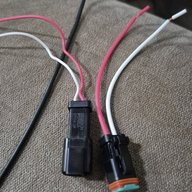
Conectores DT, 250 peças
situação o que eu uso
R$ 96,58 + R$ 19,80 de imposto (20/11). Frete Choice: grátis a partir de R$ 99
Kit 280 terminais pré-isolados com caixa
situação o que eu uso
R$ 38,65
Bornes TB-2506 25 A 6 vias, 4 peças
situação o que eu uso
R$ 27,16
Trilho DIN TS35 20 cm, 3 peças
situação o que eu uso
R$ 16,00
Prensa-cabo PG9, 10 peças
situação o que eu uso
R$ 20,23
Prensa-cabo PG11, 10 peças
situação o que eu uso
R$ 24,13
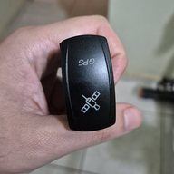
Interruptor do piloto IP68, 5 pinos
situação o que eu uso
R$ 29,28 + R$ 6,03 de imposto (20/11). Frete Choice: grátis a partir de R$ 99
Termorretrátil colorido, kit 560 peças
situação o que eu uso, vem de tudo
R$ 31,96
Termorretrátil 4:1 com cola, 6 ou 16 mm (emenda à prova d'água)
situação o que eu uso. O anúncio onde eu comprei saiu do ar em 20/11: procure outro termorretrátil 4:1 com cola
Fita de pano para chicote, 20 m × 25 mm
situação o que eu uso
R$ 16,41 + R$ 3,40 de imposto (20/11). Frete Choice: grátis a partir de R$ 99
Conector Ethercon RJ45 de painel IP65, 2 peças (a rede entrando na caixa)
situação o que eu uso
R$ 59,31
Extensor de antena SMA macho × fêmea RG174, 4 m
situação o que eu uso
R$ 49,90
Dá pra trocar por
Caixa de fusíveis e relés 6 vias, pré-fiada
no lugar de a minha, da autoelétrica
o que muda já vem com os fios
situação não testei, mas é pra funcionar
R$ 170,91, importado
Relé 40 A 12 V com chicote
no lugar de o relé que eu uso
o que muda já vem com o chicote
situação equivalente ao meu
R$ 21,90
Fio 4 mm², 10 m
no lugar de o fio que eu uso
o que muda a mesma bitola
situação equivalente ao meu
R$ 45,00
Kit conectores selados (agrícola), 250 peças
no lugar de os conectores DT
o que muda vendido no Brasil, mais caro
situação equivalente ao meu
R$ 299,99
Manga trançada preta 4 mm, por metro
no lugar de a fita de pano
o que muda outra proteção para o chicote, vendida por metro
situação não testei, mas é pra funcionar
R$ 3,08 + R$ 0,65 de imposto o metro (20/11). Frete R$ 70,03 em 5 m
Pra completar a instalação
Aqui serve qualquer um bom. Esses são anúncios que eu achei, e não testei o anúncio
Plugue Ampseal 23 vias 770680-1, com os 23 terminais
para que serve a outra metade do conector grande da placa: é nele que o chicote entra
R$ 125,13
Cabo micro USB de dados, 1 m
para que serve grava o programa no Teensy. Cabo só de carga não grava
R$ 19,98
Espaçadores de nylon M3, com parafuso e porca, 300 peças
para que serve prendem o GPS na placa: só encaixado, ele solta com a trepidação
R$ 48,84, importado
Extensor SMA macho 90° para SMA fêmea de painel, 30 cm (no anúncio, "316 SMA M RA to F" e "12inch (30CM)")
para que serve o cabo da antena puxa a caixa, e não o GPS
R$ 38,31 + R$ 7,88 de imposto (20/11). Frete grátis
Base de ímã para antena, rosca 5/8
para que serve prende a antena no teto. A minha é de ímã: com a antena bem enroscada, nunca caiu
R$ 87,76 + R$ 18,01 de imposto (20/11). Frete Choice: grátis a partir de R$ 99
Silicone neutro incolor
para que serve veda a caixa. Tem que ser neutro: o acético solta ácido e ataca a placa
R$ 33,00
Porta-fusível maxi com fusível de 30 A, fio de 4 mm
para que serve o fusível perto da bateria
R$ 20,97
Disjuntor rearmável 12 V (no anúncio, escolha 30 A)
para que serve a chave geral: a parada de emergência, na cabine, ao alcance da mão
R$ 93,02
Fusíveis de lâmina média, kit de 100 com estojo
para que serve os da caixa de fusíveis: 25 A, 5 A, 2 A e 1 A
R$ 59,60
Porta-fusível em linha à prova d'água, com fusível de 10 A
para que serve no fio do motor, na saída do conversor
R$ 36,90
Fio de 2,5 mm², 10 m
para que serve o do motor, o do conversor e o do pino 18
R$ 46,35
Fio de 1,5 mm², 10 m
para que serve os pinos 22 e 23 e a tomada do tablet
R$ 32,96
Cabo PP 2 × 0,5 mm², 10 m
para que serve o do botão
R$ 34,00
Fio de 1 mm², 10 m
para que serve o da luz do botão
R$ 24,00
Filamento TPU 95A, 1 kg
para que serve a engrenagem pequena
R$ 145,00
A tela: tablet Android de 10 polegadas pra cima
Se já tem um, não precisa comprar. Olha o brilho, por causa do sol na cabine: acima de 300 nits
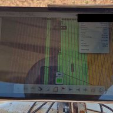
Galaxy Tab S6 Lite
brilho 486 nits (medido)
situação o que eu uso
o meu, comprei novo
Dá pra trocar por
Galaxy Tab S10 Lite novo
no lugar de o S6 Lite
o que muda é mais novo, tem mais brilho (600 nits, do fabricante) e hoje está mais barato que o S6 Lite. É o que eu indico comprar
situação não testei, mas é pra funcionar
R$ 2.139,00
Na cabine
Tomada com 4 USB-C PD e voltímetro, 12/24 V
situação o que eu uso
R$ 59,99
Tomada soquete 12/24 V com tampa
situação o que eu uso
R$ 41,72
A rede na cabine
Não testei esses anúncios
Cabo de rede Cat6, 5 m
para que serve da placa ao roteador
R$ 29,99
Roteador TP-Link TL-WR840N
para que serve sem Starlink no trator, é ele que faz a rede da placa com o tablet. Um barato serve. Ele liga em 9 V, então precisa do conversor de baixo
R$ 115,80
Conversor 12/24 V → 9 V, 2 A
para que serve liga o roteador no trator, num porta-fusível da caixa
R$ 39,00
Chave de rede (switch) TP-Link LS1005, 5 portas, liga em 5 V
para que serve só numa caixa com mais coisa na rede, como a minha nova
R$ 51,00
Regulador 12 V → 5 V, 3 A (entrada de 9 a 75 V)
para que serve liga a chave de rede; compre 2, um de reserva
R$ 37,90
A base RTK e o sinal no trator
Sem correção, o GPS erra metros. Com a correção RTK, erra centímetros. E a correção vem de uma base
Antes de comprar, vê se você precisa de base. Tem região que já tem sinal de base perto, de graça
Se for montar a sua:
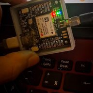
GPS F9P da base (SparkFun RTK2)
situação o que eu uso na base. Na placa AiO 4.5 ele precisa de adaptação na ligação, que eu não testei
R$ 879,45 + R$ 584,38 de imposto (20/11). Frete R$ 135,95
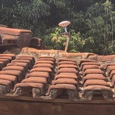
Antena da base (a AG35, a mesma da página 2)
situação a mesma antena da página 2, com o cabo. A minha é a STA Orange; essa é igual
R$ 259,63 + R$ 53,24 de imposto, com o cabo (20/11). Frete R$ 82,77
Computador da base
situação um notebook velho serve
Como o sinal chega no trator
Pega celular no talhão
o que comprar chip 4G no próprio tablet
R$ 25 a R$ 35 por mês
Não pega celular
o que comprar antena Starlink. Eu usei uma que eu já tinha. Confira o plano e o preço na Starlink
conversor Starlink Mini 12/24 V → 57 V (o que eu uso): R$ 138,00, comprar
Não quer investir na antena
o que comprar par de rádios LoRa de 915 MHz, um na base e um no trator. Dizem que funciona. Comprei 2 desses e ainda não testei: comprar
R$ 171,99 + R$ 35,25 de imposto, cada (20/11). Frete grátis
Outras coisas que eu uso
Chave fim de curso ME-8108
para que serve o sensor de trabalho da plantadeira
R$ 19,90
Bomba elétrica de transferência 12 V, 45 L/min
para que serve enche o tanque do micron. Não é a minha: o anúncio da minha está pausado, e essa é a mais vendida
R$ 206,00
Impressora 3D Creality Ender-3 V3 KE (escolha 127 V ou 220 V)
para que serve imprime a engrenagem, o suporte e as peças
R$ 1.968,00
Na bancada
Fonte de bancada 30 V 10 A, com limite de corrente
para que serve é o que evita queimar peça na primeira ligação
R$ 472,90
Multímetro digital Hikari HM-1002B
para que serve medir tensão antes de ligar
R$ 55,00
Estação de solda Yihua 926, 60 W (escolha 127 V ou 220 V)
para que serve ferro com controle de temperatura: o fraco não solda o regulador
R$ 189,00
Alicate de crimpar terminal pré-isolado, 0,5 a 6 mm², com 280 terminais
para que serve crimpa os terminais do chicote
R$ 69,99
Quanto sai tudo
Já tem tablet, notebook e internet (ou sinal de base perto): o kit e a instalação
como eu comprei cerca de R$ 6.700
pelo caminho mais barato cerca de R$ 4.700
Não tem nada: o kit, a instalação, um tablet novo (o S10 Lite) e a base completa
como eu comprei cerca de R$ 10.600
pelo caminho mais barato cerca de R$ 8.400
Em "como eu comprei", a placa, o Teensy, o GPS, o sensor de inclinação, o driver e o sensor da roda entram pelo que eu paguei em 2025: a placa dividida pelo lote de 5, o sensor da roda pelo kit de 4 (um por trator). O caminho mais barato troca o GPS e a antena do trator, a antena da base, o sensor de inclinação e o sensor da roda, e esses eu não testei. O tablet da conta é o S10 Lite, o que eu indico hoje. O meu S6 Lite eu comprei novo, e não entra com preço
A instalação é tudo o que você precisa comprar da parte 'Fio, caixa e a tela'. O relé e o fio entram pelos da troca, e a caixa de fusíveis pela pré-fiada (a minha é da autoelétrica)
A placa vem num lote de 5 e o sensor da roda num kit de 4. Dividindo com mais gente, a conta é a de cima: uns R$ 6.700. Montando um só, você paga o lote e o kit inteiros e passa de R$ 9 mil. O que sobra fica de reserva
Já tem tablet, notebook e internet (ou sinal de base perto)
como eu comprei cerca de R$ 9.200
pelo caminho mais barato cerca de R$ 6.300
Não tem nada
como eu comprei cerca de R$ 13.100
pelo caminho mais barato cerca de R$ 10.000
Em "como eu comprei", as outras 4 placas entram pelo que eu paguei no lote, e os outros 3 sensores pelo kit. No caminho mais barato, as 4 placas entram pelo preço do lote hoje (o sensor da roda já é o avulso)
Fora da conta: frete (só as 10 peças do AliExpress que eu uso, juntas, deram uns R$ 180 em 20/11), ferramentas e o seu tempo
Piloto de marca, nas lojas: R$ 33 mil a R$ 50 mil, fora a instalação
O guia completo
Comprar as peças é a parte fácil. O que dá trabalho é fazer funcionar
Tô terminando o guia de como eu montei. Quem tá nesta lista fica sabendo primeiro
Vou mostrando a montagem, os testes e os erros nos vídeos. Novidade do piloto sai primeiro pra quem tá na lista: o link na bio do meu Instagram
Fiz essa lista com muito carinho. Quase todos os links das peças são de afiliado: se você comprar por eles, não paga nada a mais por isso e, além de fazer uma 🐮 feliz, ajuda um pequeno produtor 🇧🇷
Conferido em 17/11/2026. Quase todos os links são de afiliado: você não paga nada a mais.